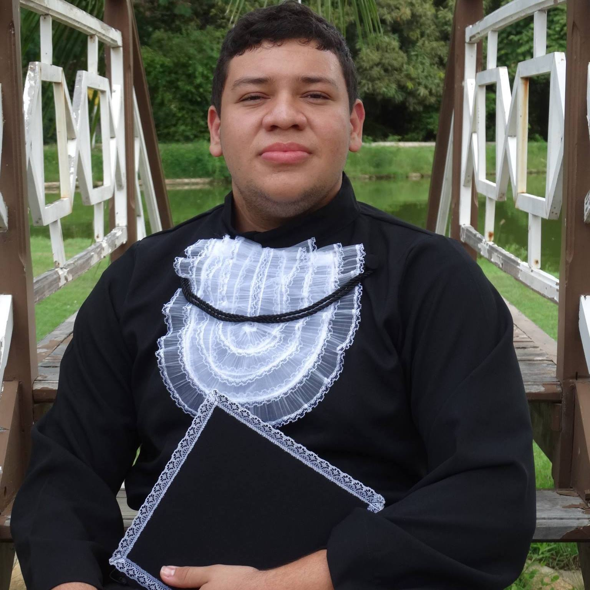

Graduando no Bacharelado em Tecnologia da Informação (BTI) pela UFRN. Tem facilidade em comunicação na língua inglesa. Tem experiência em desenvolvimento web com as seguintes tecnologias: PHP (CakePHP), CSS (Bootstrap), JavaScript (ajax + jQuery) e Ruby(Rails básico). Trabalhou no desenvolvimento de Web Crawlers usando: Java e Selenium.